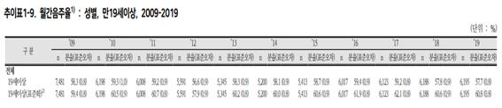
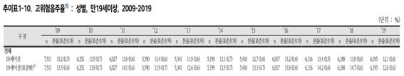

우리나라의 성인 전체 음주율은 2019년 기준 60.8%이며, 음주자 가운데 12.6%가 고위험 음주에 해당하였다. 간경변증은 만성 알코올 중독 환자의 10~15% 정도에서 발생하며, 모든 간경변증의 45% 이상이 알코올과 관련되어 있으며 남성이 여성보다 간경변증의 발생이 높다.
 나는 이번에 내과 병동에서 실습을 진행하면서 간경변증의 환자를 5명 이상 만나보았고, 이들은 모두 ‘알코올’과 관련되어 진단명이 ‘Alcoholic cirrhosis of liver’를 기반으로 다양한 원인과 함께 질병을 가지고 있음을 알 수 있었다.
이를 통해 나는 ‘Alcoholic cirrhosis of liver’를 가지고 있는 환자를 사례연구보고서의 대상으로 정하여 대상자를 사정하고 간호문제를 도출하여 간호과정을 적용해보고 이들이 건강을 되찾을 수 있도록 유도해보고자 한다.